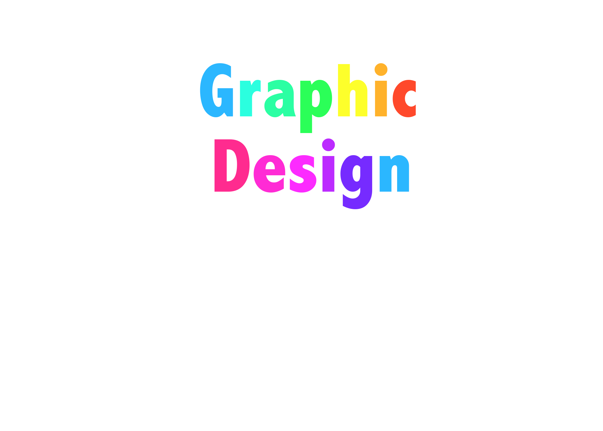
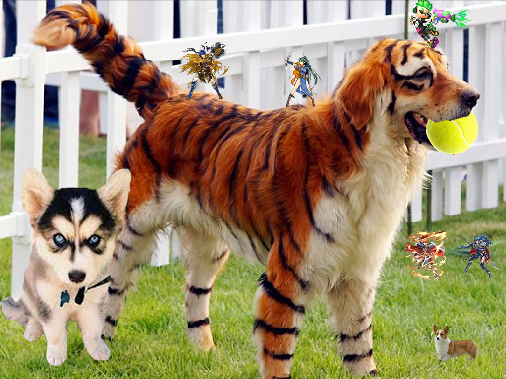

In todays ever changing economy and job market the fine arts of digital and graphic design are of the utmost important today. "According to the U.S. Department of Labor, there were 279,200 graphic design jobs in 2010. This is expected to increase by 13 percent by 2020, which means an additional 37,300 jobs will be created." By Profiles, December 12, 2013, December 18th, 2017.
By 2020 graphic desgin jobs are to increase by 13%, and to those who are in the same field as I know that it isn't a big job market because of the skill needed and the low hiring rate it contains, in fact even though it pays well it is still a job that isn't common yet as of late it is picking up pace in our ever changing society.
In Adobe Photoshop you can make a simple text image with no background like so
Or manipulate and create a small collage of what you love
The fine arts of elemental and graphical design are diffuclt to learn but the pay off is very well. The average Graphic Design worker earns around 40k per year when they start out, while most jobs dont pay as highly. The annual salary for a lower class is considerd anywhere under $35,000 while middle class is above that to near $105,000. Now earning 40k a year is pretty decent since it can be used to start building your own life or can be invested in something else.
There are many fields in this work place, from programers to advertisement creators to even layout artists and web designers.
Go to second page